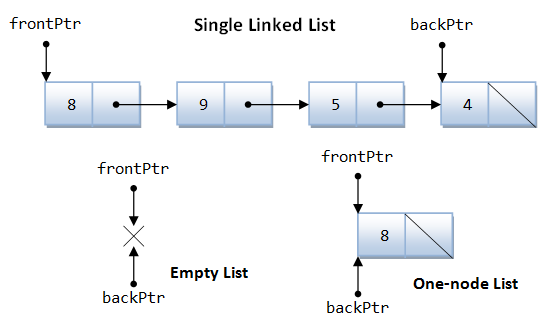
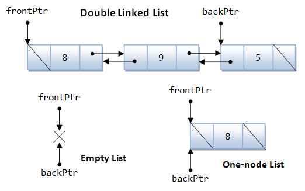
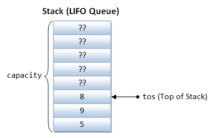
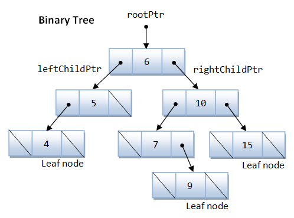

Searching
Searching involves deciding whether a search key is present in the data. For example, looking up a phone book or address book. The searching algorithm includes:
- Linear Search: See "Linear Search".
- Recursive Binary Search for sorted list
- Binary Tree Search
Linear Search
See "Linear Search".
Complexity
The worst-case and average-case time complexity is O(n). The best-case is O(1).
Binary Search
A binary search (or half-interval search) is applicable only to a sorted array. It compares the search key with the middle element. If there is a match, it returns the element's index. If the search key is less then the middle element, repeat searching on the left half; otherwise, search the right half. If the remaining element to be searched is zero, return "no found".
1 2 3 4 5 6 7 8 9 10 11 12 13 14 15 16 17 18 19 20 21 22 23 24 25 26 27 28 29 30 31 32 33 34 35 36 37 38 39 40 41 42 43 44 45 46 47 48 49 50 51 52 53 54 55 |
/* Search an array for a key using Binary Search (BinarySearch.cpp) */ #include <iostream> using namespace std; int binarySearch(const int a[], int size, int key); int binarySearch(const int a[], int iLeft, int iRight, int key); void print(const int a[], int iLeft, int iRight); int main() { const int SIZE = 10; int a1[SIZE] = {1, 4, 5, 8, 12, 19, 24, 31, 43, 55}; // sorted cout << binarySearch(a1, SIZE, 8) << endl; cout << binarySearch(a1, SIZE, 12) << endl; cout << binarySearch(a1, SIZE, 24) << endl; cout << binarySearch(a1, SIZE, 21) << endl; } // Search the array for the given key // If found, return array index; otherwise, return -1 int binarySearch(const int a[], int size, int key) { // Call recursive helper function return binarySearch(a, 0, size-1, key); } // Recursive helper function for binarySearch int binarySearch(const int a[], int iLeft, int iRight, int key) { // For tracing the algorithm print(a, iLeft, iRight); // Test for empty list if (iLeft > iRight) return -1; // Compare with middle element int mid = (iRight + iLeft) / 2; // truncate if (key == a[mid]) { return mid; } else if (key < a[mid]) { // Recursively search the lower half binarySearch(a, iLeft, mid - 1, key); } else { // Recursively search the upper half binarySearch(a, mid + 1, iRight, key); } } // Print the contents of the given array from iLeft to iRight (inclusive) void print(const int a[], int iLeft, int iRight) { cout << "{"; for (int i = iLeft; i <= iRight; ++i) { cout << a[i]; if (i < iRight) cout << ","; } cout << "}" << endl; } |
Complexity
The worst-case and average-case time complexity for binary search is O(log n). The best-case is O(1).
Sorting
Sorting involves arranging data in ascending or descending order, according to a certain collating sequence (or sorting sequence). The sorting algorithm includes:
- Insertion Sort: See "Insertion Sort".
- Selection Sort: See "Selection Sort".
- Bubble Sort: See "Bubble Sort"
- Merge Sort (Recursive Top-Down or Interactive Bottom-up)
- Quick Sort (Recursive)
- Bucket Sort
- Heap Sort
- Binary Tree Sort
Bubble Sort
See "Bubble Sort"
Complexity
The average-case and worst-case time complexity is O(n2).
Insertion Sort
See "Insertion Sort".
Complexity
The average-case and worst-case time complexity is O(n2).
Selection Sort
See "Selection Sort".
Complexity
The average-case and worst-case time complexity is O(n2).
Merge Sort
Recursive Top-Down Merge Sort
The algorithm is as follows:
- Recursively divide the list into 2 sublists.
- When the sublists contain 1 element (a list of 1 element is sorted), merge two sublists in the right order. Unwind the merging recursively.
1 2 3 4 5 6 7 8 9 10 11 12 13 14 15 16 17 18 19 20 21 22 23 24 25 26 27 28 29 30 31 32 33 34 35 36 37 38 39 40 41 42 43 44 45 46 47 48 49 50 51 52 53 54 55 56 57 58 59 60 61 62 63 64 65 66 67 68 69 70 71 72 73 74 75 76 77 78 79 80 81 82 83 84 85 86 87 88 89 90 91 92 93 94 95 96 97 |
/* Sorting an array using Merge Sort (MergeSort.cpp) */ #include <iostream> using namespace std; void mergeSort(int a[], int size); void mergeSort(int a[], int iLeft, int iRight, int work[]); void merge(int a[], int iLeftHalfLeft, int iLeftHalfRight, int iRightHalfLeft, int iRightHalfRight, int work[]); void print(const int a[], int iLeft, int iRight); int main() { // Test 1 const int SIZE_1 = 8; int a1[SIZE_1] = {8, 4, 5, 3, 2, 9, 4, 1}; print(a1, 0, SIZE_1 - 1); cout << endl; mergeSort(a1, SIZE_1); print(a1, 0, SIZE_1 - 1); cout << endl << endl; // Test 2 const int SIZE_2 = 13; int a2[SIZE_2] = {8, 4, 5, 3, 2, 9, 4, 1, 9, 1, 2, 4, 5}; print(a2, 0, SIZE_2 - 1); cout << endl; mergeSort(a2, SIZE_2); print(a2, 0, SIZE_2 - 1); cout << endl; } // Sort the given array of size void mergeSort(int a[], int size) { int work[size]; // work space mergeSort(a, 0, size - 1, work); } // Sort the given array in [iLeft, iRight] void mergeSort(int a[], int iLeft, int iRight, int work[]) { if ((iRight - iLeft) >= 1) { // more than 1 elements, divide and sort // Divide into left and right half int iLeftHalfLeft = iLeft; int iLeftHalfRight = (iRight + iLeft) / 2; // truncate int iRightHalfLeft = iLeftHalfRight + 1; int iRightHalfRight = iRight; // Recursively sort each half mergeSort(a, iLeftHalfLeft, iLeftHalfRight, work); mergeSort(a, iRightHalfLeft, iRightHalfRight, work); // Merge two halves merge(a, iLeftHalfLeft, iLeftHalfRight, iRightHalfLeft, iRightHalfRight, work); } } // Merge two halves in [iLeftHalfLeft, iLeftHalfRight] and [iRightHalfLeft, iRightHalfRight] // Assume that iLeftHalfRight + 1 = iRightHalfLeft void merge(int a[], int iLeftHalfLeft, int iLeftHalfRight, int iRightHalfLeft, int iRightHalfRight, int work[]) { int size = iRightHalfRight - iLeftHalfLeft + 1; int iResult = 0; int iLeft = iLeftHalfLeft; int iRight = iRightHalfLeft; while (iLeft <= iLeftHalfRight && iRight <= iRightHalfRight) { if (a[iLeft] <= a[iRight]) { work[iResult++] = a[iLeft++]; } else { work[iResult++] = a[iRight++]; } } // Copy the remaining left or right into work while (iLeft <= iLeftHalfRight) work[iResult++] = a[iLeft++]; while (iRight <= iRightHalfRight) work[iResult++] = a[iRight++]; // for tracing print(a, iLeftHalfLeft, iLeftHalfRight); print(a, iRightHalfLeft, iRightHalfRight); cout << "=> "; print(work, 0, size - 1); cout << endl; // Copy the work back to the original array for (iResult = 0, iLeft = iLeftHalfLeft; iResult < size; ++iResult, ++iLeft) { a[iLeft] = work[iResult]; } } // Print the contents of the given array from iLeft to iRight (inclusive) void print(const int a[], int iLeft, int iRight) { cout << "{"; for (int i = iLeft; i <= iRight; ++i) { cout << a[i]; if (i < iRight) cout << ","; } cout << "} "; } |
{8,4,5,3,2,9,4,1}
{8} {4} => {4,8}
{5} {3} => {3,5}
{4,8} {3,5} => {3,4,5,8}
{2} {9} => {2,9}
{4} {1} => {1,4}
{2,9} {1,4} => {1,2,4,9}
{3,4,5,8} {1,2,4,9} => {1,2,3,4,4,5,8,9}
{1,2,3,4,4,5,8,9}
{8,4,5,3,2,9,4,1,9,1,2,4,5}
{8} {4} => {4,8}
{5} {3} => {3,5}
{4,8} {3,5} => {3,4,5,8}
{2} {9} => {2,9}
{2,9} {4} => {2,4,9}
{3,4,5,8} {2,4,9} => {2,3,4,4,5,8,9}
{1} {9} => {1,9}
{1,9} {1} => {1,1,9}
{2} {4} => {2,4}
{2,4} {5} => {2,4,5}
{1,1,9} {2,4,5} => {1,1,2,4,5,9}
{2,3,4,4,5,8,9} {1,1,2,4,5,9} => {1,1,2,2,3,4,4,4,5,5,8,9,9}
{1,1,2,2,3,4,4,4,5,5,8,9,9}
Interactive Bottom-up Merge Sort
Treat the list as sublists of length 1, and interactively merge a pair of sublists bottom-up, until there is only one sublist.
1 2 3 4 5 6 7 8 9 10 11 12 13 14 15 16 17 18 19 20 21 22 23 24 25 26 27 28 29 30 31 32 33 34 35 36 37 38 39 40 41 42 43 44 45 46 47 48 49 50 51 52 53 54 55 56 57 58 59 60 61 62 63 64 65 66 67 68 69 70 71 72 73 74 75 76 77 78 79 80 81 82 83 84 85 86 87 88 89 90 91 92 93 94 95 |
/* Sorting an array using Merge Sort with bottom-up interactive algorithm (MergeSortInteractive.cpp) */ #include <iostream> using namespace std; void mergeSort(int a[], int size); void merge(int a[], int iLeftHalfLeft, int iLeftHalfRight, int iRightHalfLeft, int iRightHalfRight, int work[]); void print(const int a[], int iLeft, int iRight); int main() { // Test 1 const int SIZE_1 = 8; int a1[SIZE_1] = {8, 4, 5, 3, 2, 9, 4, 1}; print(a1, 0, SIZE_1 - 1); cout << endl; mergeSort(a1, SIZE_1); print(a1, 0, SIZE_1 - 1); cout << endl << endl; // Test 2 const int SIZE_2 = 13; int a2[SIZE_2] = {8, 4, 5, 3, 2, 9, 4, 1, 9, 1, 2, 4, 5}; print(a2, 0, SIZE_2 - 1); cout << endl; mergeSort(a2, SIZE_2); print(a2, 0, SIZE_2 - 1); cout << endl; } // Sort the given array of size void mergeSort(int a[], int size) { int work[size]; // work space int width = 1; // width of sublists to merge while (width < size) { // Merge 2 sublists of width for (int i = 0; i < size - width; i += 2*width) { // Get the bounds of left and right sublists int iLeftHalfLeft = i; int iLeftHalfRight = i + width - 1; int iRightHalfLeft = i + width; int iRightHalfRight = i + 2*width - 1; if (iRightHalfRight >= size - 1) iRightHalfRight = size - 1; // Merge left and right sublists merge(a, iLeftHalfLeft, iLeftHalfRight, iRightHalfLeft, iRightHalfRight, work); } width *= 2; } } // Merge two halves in [iLeftHalfLeft, iLeftHalfRight] and [iRightHalfLeft, iRightHalfRight] // Assume that iLeftHalfRight + 1 = iRightHalfLeft void merge(int a[], int iLeftHalfLeft, int iLeftHalfRight, int iRightHalfLeft, int iRightHalfRight, int work[]) { int size = iRightHalfRight - iLeftHalfLeft + 1; int iResult = 0; int iLeft = iLeftHalfLeft; int iRight = iRightHalfLeft; while (iLeft <= iLeftHalfRight && iRight <= iRightHalfRight) { if (a[iLeft] <= a[iRight]) { work[iResult++] = a[iLeft++]; } else { work[iResult++] = a[iRight++]; } } // Copy the remaining left or right into work while (iLeft <= iLeftHalfRight) work[iResult++] = a[iLeft++]; while (iRight <= iRightHalfRight) work[iResult++] = a[iRight++]; // for tracing print(a, iLeftHalfLeft, iLeftHalfRight); print(a, iRightHalfLeft, iRightHalfRight); cout << "=> "; print(work, 0, size - 1); cout << endl; // Copy the work back to the original array for (iResult = 0, iLeft = iLeftHalfLeft; iResult < size; ++iResult, ++iLeft) { a[iLeft] = work[iResult]; } } // Print the contents of the given array from iLeft to iRight (inclusive) void print(const int a[], int iLeft, int iRight) { cout << "{"; for (int i = iLeft; i <= iRight; ++i) { cout << a[i]; if (i < iRight) cout << ","; } cout << "} "; } |
{8,4,5,3,2,9,4,1}
{8} {4} => {4,8}
{5} {3} => {3,5}
{2} {9} => {2,9}
{4} {1} => {1,4}
{4,8} {3,5} => {3,4,5,8}
{2,9} {1,4} => {1,2,4,9}
{3,4,5,8} {1,2,4,9} => {1,2,3,4,4,5,8,9}
{1,2,3,4,4,5,8,9}
{8,4,5,3,2,9,4,1,9,1,2,4,5}
{8} {4} => {4,8}
{5} {3} => {3,5}
{2} {9} => {2,9}
{4} {1} => {1,4}
{9} {1} => {1,9}
{2} {4} => {2,4}
{4,8} {3,5} => {3,4,5,8}
{2,9} {1,4} => {1,2,4,9}
{1,9} {2,4} => {1,2,4,9}
{3,4,5,8} {1,2,4,9} => {1,2,3,4,4,5,8,9}
{1,2,4,9} {5} => {1,2,4,5,9}
{1,2,3,4,4,5,8,9} {1,2,4,5,9} => {1,1,2,2,3,4,4,4,5,5,8,9,9}
{1,1,2,2,3,4,4,4,5,5,8,9,9}
Complexity
The worst-case and average-case time complexity is O(n log n). The best-case is typically O(n log n). However, merge sort requires a space complexity of O(n) for carrying out the merge-sorting.
Quick Sort
Quick sort is a divide and conquer algorithm. It picks a pivot and divides the list into two sub-lists: the low elements and the high elements, and recursively sorts the sub-lists.
- Pick a element, called pivot, from the list.
- Partition the list so that the smaller elements are before the pivot, and the larger elements after the pivot.
- Recursively sort the sub-lists.
Partition: The partition procedure are:
// Assume that the pivot element is already on the right partition(array, left, right) storeIndex := left for i from left to right - 1 // left <= i < right if array[i] <= pivotValue if i != storeIndex swap array[i] and array[storeIndex] storeIndex := storeIndex + 1 swap array[storeIndex] and array[right] // Move pivot to its final place return storeIndex
Choosing the pivot: If the list is already sorted, choosing the first or last element as pivot results in worst performance of O(n2). We choose the middle element, and swap the the element at the right end, so as not to interfere with the partition process.
QuickSort.cpp
1 2 3 4 5 6 7 8 9 10 11 12 13 14 15 16 17 18 19 20 21 22 23 24 25 26 27 28 29 30 31 32 33 34 35 36 37 38 39 40 41 42 43 44 45 46 47 48 49 50 51 52 53 54 55 56 57 58 59 60 61 62 63 64 65 66 67 68 69 70 71 72 73 74 75 76 77 78 79 80 81 82 83 84 85 86 87 88 89 90 91 92 93 94 95 96 97 98 99 100 101 102 103 104 105 106 107 |
/* Sorting an array using Quick Sort (QuickSort.cpp) */ #include <iostream> using namespace std; void quickSort(int a[], int size); void quickSort(int a[], int left, int right); void choosePivot(int a[], int left, int right); int partition(int a[], int left, int right); void print(const int a[], int left, int right); int main() { // Test 1 const int SIZE_1 = 8; int a1[SIZE_1] = {8, 4, 5, 3, 2, 9, 4, 1}; print(a1, 0, SIZE_1 - 1); cout << endl; quickSort(a1, SIZE_1); print(a1, 0, SIZE_1 - 1); cout << endl << endl; // Test 2 const int SIZE_2 = 13; int a2[SIZE_2] = {8, 4, 5, 3, 2, 9, 4, 1, 9, 1, 2, 4, 5}; print(a2, 0, SIZE_2 - 1); cout << endl; quickSort(a2, SIZE_2); print(a2, 0, SIZE_2 - 1); cout << endl; } // Sort the given array of size void quickSort(int a[], int size) { quickSort(a, 0, size - 1); } // Sort the given array in [left, right] void quickSort(int a[], int left, int right) { if ((right - left) >= 1) { // more than 1 elements, need to sort choosePivot(a, left, right); int pivotIndex = partition(a, left, right); quickSort(a, left, pivotIndex - 1); quickSort(a, pivotIndex + 1, right); } } // Choose a pivot element and swap with the right void choosePivot(int a[], int left, int right) { int pivotIndex = (right + left) / 2; int temp; temp = a[pivotIndex]; a[pivotIndex] = a[right]; a[right] = temp; } // Partition the array [left, right] with pivot initially on the right. // Return the index of the pivot after partition, all elements to the // left of pivot are smaller; while to the right are larger. int partition(int a[], int left, int right) { int pivot = a[right]; int temp; // for swapping int storeIndex = left; // Start the storeIndex from left, swap elements smaller than // pivot into storeIndex and increase the storeIndex. // At the end of the pass, all elements up to storeIndex are // smaller than pivot. for (int i = left; i < right; ++i) { // exclude pivot if (a[i] < pivot) { // for tracing print(a, left, right); if (i != storeIndex) { temp = a[i]; a[i] = a[storeIndex]; a[storeIndex] = temp; } ++storeIndex; // for tracing cout << "=> "; print(a, left, right); cout << endl; } } // Swap pivot and storeIndex a[right] = a[storeIndex]; a[storeIndex] = pivot; // for tracing print(a, left, storeIndex - 1); cout << "{" << a[storeIndex] << "} "; print(a, storeIndex + 1, right); cout << endl; return storeIndex; } // Print the contents of the given array from left to right (inclusive) void print(const int a[], int left, int right) { cout << "{"; for (int i = left; i <= right; ++i) { cout << a[i]; if (i < right) cout << ","; } cout << "} "; } |
{8,4,5,3,2,9,4,1}
{8,4,5,1,2,9,4,3} => {1,4,5,8,2,9,4,3}
{1,4,5,8,2,9,4,3} => {1,2,5,8,4,9,4,3}
{1,2} {3} {8,4,9,4,5}
{} {1} {2}
{8,4,5,4,9} => {8,4,5,4,9}
{8,4,5,4,9} => {8,4,5,4,9}
{8,4,5,4,9} => {8,4,5,4,9}
{8,4,5,4,9} => {8,4,5,4,9}
{8,4,5,4} {9} {}
{} {4} {4,5,8}
{4,8,5} => {4,8,5}
{4} {5} {8}
{1,2,3,4,4,5,8,9}
{8,4,5,3,2,9,4,1,9,1,2,4,5}
{8,4,5,3,2,9,5,1,9,1,2,4,4} => {3,4,5,8,2,9,5,1,9,1,2,4,4}
{3,4,5,8,2,9,5,1,9,1,2,4,4} => {3,2,5,8,4,9,5,1,9,1,2,4,4}
{3,2,5,8,4,9,5,1,9,1,2,4,4} => {3,2,1,8,4,9,5,5,9,1,2,4,4}
{3,2,1,8,4,9,5,5,9,1,2,4,4} => {3,2,1,1,4,9,5,5,9,8,2,4,4}
{3,2,1,1,4,9,5,5,9,8,2,4,4} => {3,2,1,1,2,9,5,5,9,8,4,4,4}
{3,2,1,1,2} {4} {5,5,9,8,4,4,9}
{} {1} {2,2,1,3}
{2,3,1,2} => {1,3,2,2}
{1} {2} {2,3}
{} {2} {3}
{5,5,9,9,4,4,8} => {5,5,9,9,4,4,8}
{5,5,9,9,4,4,8} => {5,5,9,9,4,4,8}
{5,5,9,9,4,4,8} => {5,5,4,9,9,4,8}
{5,5,4,9,9,4,8} => {5,5,4,4,9,9,8}
{5,5,4,4} {8} {9,9}
{5,4,4,5} => {4,5,4,5}
{4,5,4,5} => {4,4,5,5}
{4,4} {5} {5}
{} {4} {4}
{} {9} {9}
{1,1,2,2,3,4,4,4,5,5,8,9,9}
Complexity
The worst-case time complexity is O(n2). The average-case (typical) and best-case is O(n log n). In-place sorting can be achieved without additional space requirement.
Bucket Sort
Bucket sort (or bin sort) works by distributing the elements into a number of buckets, and each bucket is then sorted individually. Bucket sort is a distribution sort, and is a cousin of radix sort, in which the sorting begins at the most significant digit and goes down to the less significant ones. Bucket sort is not a comparison sort like bubble sort, insertion sort or selection sort.
The algorithm is as follows:
- Set up buckets, initially empty.
- Scatter: place each element into an appropriate bucket.
- Sort each non-empty bucket.
- Gather: Gather elements from buckets and put back to the original array.
Radix Sort (Recursive)
Use 10 buckets to sort from the most-significant down to the least-significant digit.
1 2 3 4 5 6 7 8 9 10 11 12 13 14 15 16 17 18 19 20 21 22 23 24 25 26 27 28 29 30 31 32 33 34 35 36 37 38 39 40 41 42 43 44 45 46 47 48 49 50 51 52 53 54 55 56 57 58 59 60 61 62 63 64 65 66 67 68 69 70 71 72 73 74 75 76 77 78 79 80 81 82 83 84 85 86 87 88 89 90 91 92 93 94 95 96 97 98 99 100 101 102 103 104 105 |
/* Bucket Sort (Radix Sort) (BucketSort.cpp) */ #include <iostream> #include <vector> using namespace std; void bucketSort(int a[], int size); void bucketSort(vector<int> & list, int radix); void printBuckets(const vector<int> buckets[], int size); void print(const vector<int> list); const int NUM_BUCKETS = 10; int main() { const int SIZE = 13; int a[] = {28, 104, 25, 593, 22, 129, 4, 11, 129, 4, 111, 20, 9}; bucketSort(a, SIZE); } void bucketSort(int a[], int size) { // find maximum to decide on the number of significant digits int max = a[0]; for (int i = 1; i < size; ++i) { if (a[i] > max) max = a[i]; } // Decide on the max radix (1000, 100, 10, 1, etc) int radix = 1; while (max > 10) { radix *= 10; max /= 10; } // copy the array into a vector vector<int> list(size); for (int i = 0; i < size; ++i) { list[i] = a[i]; } bucketSort(list, radix); } // Sort the given array of size on the particular radix (1, 10, 100, etc) // Assume elements are non-negative integers // radix shall be more than 0 void bucketSort(vector<int> & list, int radix) { if (list.size() > 1 && radix > 0) { // Sort if more than 1 elements // For tracing cout << "To sort: "; print(list); vector<int> buckets[NUM_BUCKETS]; // 10 buckets // Distribute elements into buckets for (int i = 0; i < list.size(); ++i) { int bucketIndex = list[i] / radix % 10; buckets[bucketIndex].push_back(list[i]); } // For tracing cout << "radix=" << radix << ": "; printBuckets(buckets, NUM_BUCKETS); // Recursively sort the non-empty bucket for (int bi = 0; bi < NUM_BUCKETS; ++bi) { if (buckets[bi].size() > 0) { bucketSort(buckets[bi], radix / 10); } } // Gather all the buckets into list and return list.resize(0); // remove all elements for (int bi = 0; bi < NUM_BUCKETS; ++bi) { for (int j = 0; j < buckets[bi].size(); ++j) { list.push_back((buckets[bi])[j]); } } // For tracing cout << "Sorted: "; print(list); } } // Print the contents of all buckets void printBuckets(const vector<int> buckets[], int size) { for (int i = 0; i < size; ++i) { // print each bucket cout << "{"; for (int bi = 0; bi < buckets[i].size(); ++bi) { cout << (buckets[i])[bi]; if (bi < buckets[i].size() - 1) cout << ","; } cout << "} "; } cout << endl; } // Print the contents of vector<int> void print(const vector<int> list) { cout << "{"; for (int i = 0; i < list.size(); ++i) { cout << list[i]; if (i < list.size() - 1) cout << ","; } cout << "}" << endl; } |
To sort: {28,104,25,593,22,129,4,11,129,4,111,20,9}
radix=100: {28,25,22,4,11,4,20,9} {104,129,129,111} {} {} {} {593} {} {} {} {}
To sort: {28,25,22,4,11,4,20,9}
radix=10: {4,4,9} {11} {28,25,22,20} {} {} {} {} {} {} {}
To sort: {4,4,9}
radix=1: {} {} {} {} {4,4} {} {} {} {} {9}
Sorted: {4,4,9}
To sort: {28,25,22,20}
radix=1: {20} {} {22} {} {} {25} {} {} {28} {}
Sorted: {20,22,25,28}
Sorted: {4,4,9,11,20,22,25,28}
To sort: {104,129,129,111}
radix=10: {104} {111} {129,129} {} {} {} {} {} {} {}
To sort: {129,129}
radix=1: {} {} {} {} {} {} {} {} {} {129,129}
Sorted: {129,129}
Sorted: {104,111,129,129}
Sorted: {4,4,9,11,20,22,25,28,104,111,129,129,593}
Program Notes:
- Need to implement the buckets using dynamic array (such as
vector) as their sizes are unknown; and to expensive to set to the maximum.
Data Structures
The built-in array has many limitations. It is fixed in size and cannot grow and shrink during execution. The size has to be decided during the declaration.
Many applications require dynamic data structures, that can grow and shrink during execution. The commonly used data structures include:
- List: Single linked list, double linked list, etc.
- Queue: FIFO queue, priority queue, etc.
- Stack: LIFO queue
- Tree:
- Map or Associative Array:
Single Linked List
Node.h
1 2 3 4 5 6 7 8 9 10 11 12 13 14 15 16 17 18 19 |
#ifndef NODE_H #define NODE_H template <typename T> class List; // Forward reference template <typename T> class Node { private: T data; Node * nextPtr; public: Node (T d) : data(d), nextPtr(0) { }; // Constructor T getData() const { return data; }; // Public getter for data Node * getNextPtr() const { return nextPtr; } // Public getter for nextPtr friend class List<T>; // Make List class a friend to access private data }; #endif |
Program Notes:
- [TODO]
List.h
1 2 3 4 5 6 7 8 9 10 11 12 13 14 15 16 17 18 19 20 21 22 23 24 25 26 27 28 29 30 31 32 33 34 35 36 37 38 39 40 41 42 43 44 45 46 47 48 49 50 51 52 53 54 55 56 57 58 59 60 61 62 63 64 65 66 67 68 69 70 71 72 73 74 75 76 77 78 79 80 81 82 83 84 85 86 87 88 89 90 91 92 93 94 95 96 97 98 99 100 101 102 103 104 105 106 107 108 109 110 111 112 113 114 115 116 117 118 119 120 121 122 123 124 125 126 127 128 |
#ifndef LIST_H #define LIST_H #include <iostream> #include "Node.h" // Forward Reference template <typename T> std::ostream & operator<<(std::ostream & os, const List<T> & lst); template <typename T> class List { private: Node<T> * frontPtr; // First node Node<T> * backPtr; // Last node public: List(); // Constructor ~List(); // Destructor void pushFront(const T & value); void pushBack(const T & value); bool popFront(T & value); bool popBack(T & value); bool isEmpty() const; friend std::ostream & operator<< <>(std::ostream & os, const List<T> & lst); // Overload the stream insertion operator to print the list }; // Constructor - Create an empty list without any node template <typename T> List<T>::List() : frontPtr(0), backPtr(0) { } // Destructor - Remove all the dynamically allocated nodes template <typename T> List<T>::~List() { while (frontPtr) { Node<T> * tempPtr = frontPtr; frontPtr = frontPtr->nextPtr; delete tempPtr; } // std::cout << "Destructor completed..." << std::endl; } // Is list empty? Check if frontPtr is null template <typename T> bool List<T>::isEmpty() const { return frontPtr == 0; } // Push the data in front by dynamically allocate a new node template <typename T> void List<T>::pushFront(const T & value) { Node<T> * newNodePtr = new Node<T>(value); if (isEmpty()) { frontPtr = backPtr = newNodePtr; } else { newNodePtr->nextPtr = frontPtr; frontPtr = newNodePtr; } } // Push the data at the end by dynamically allocate a new node template <typename T> void List<T>::pushBack(const T & value) { Node<T> * newNodePtr = new Node<T>(value); if (isEmpty()) { frontPtr = backPtr = newNodePtr; } else { backPtr->nextPtr = newNodePtr; backPtr = newNodePtr; } } // Pop and the data in front to value and remove the node template <typename T> bool List<T>::popFront(T & value) { if (isEmpty()) { return false; } else if (frontPtr == backPtr) { // only one node value = frontPtr->data; delete frontPtr; // remove node frontPtr = backPtr = 0; // empty } else { value = frontPtr->data; Node<T> * tempPtr = frontPtr; frontPtr = frontPtr->nextPtr; delete tempPtr; } return true; } // Pop and the data at the end to value and remove the node template <typename T> bool List<T>::popBack(T & value) { if (isEmpty()) { return false; } else if (frontPtr == backPtr) { // only one node value = backPtr->data; delete backPtr; // remove node frontPtr = backPtr = 0; // empty } else { // Locate second to last node Node<T> * currentPtr = frontPtr; while (currentPtr->nextPtr != backPtr) { currentPtr = currentPtr->nextPtr; } value = backPtr->data; delete backPtr; // remove last node backPtr = currentPtr; currentPtr->nextPtr = 0; } return true; } // Overload the stream insertion operator to print the list template <typename T> std::ostream & operator<< (std::ostream & os, const List<T> & lst) { os << '{'; if (!lst.isEmpty()) { Node<T> * currentPtr = lst.frontPtr; while (currentPtr) { os << currentPtr->getData(); if (currentPtr != lst.backPtr) os << ','; currentPtr = currentPtr->getNextPtr(); } } os << '}'; } #endif |
Program Notes:
- [TODO]
TestList.cpp
1 2 3 4 5 6 7 8 9 10 11 12 13 14 15 16 17 18 19 20 21 22 23 24 25 26 27 28 29 30 31 32 |
/* Test Driver for List class (TestList.cpp) */
#include <iostream>
#include "List.h"
using namespace std;
int main() {
List<int> lst1;
cout << lst1 << endl;
lst1.pushFront(8);
lst1.pushBack(88);
lst1.pushFront(9);
lst1.pushBack(99);
cout << lst1 << endl;
int result;
lst1.popBack(result)
? cout << "value is " << result << ", list is " << lst1 << endl
: cout << "empty list" << endl;
lst1.popBack(result)
? cout << "value is " << result << ", list is " << lst1 << endl
: cout << "empty list" << endl;
lst1.popFront(result)
? cout << "value is " << result << ", list is " << lst1 << endl
: cout << "empty list" << endl;
lst1.popFront(result)
? cout << "value is " << result << ", list is " << lst1 << endl
: cout << "empty list" << endl;
lst1.popBack(result)
? cout << "value is " << result << ", list is " << lst1 << endl
: cout << "empty list" << endl;
}
|
{}
{9,8,88,99}
value is 99, list is {9,8,88}
value is 88, list is {9,8}
value is 9, list is {8}
value is 8, list is {}
empty list
Program Notes:
- [TODO]
Double Linked List
DoubleLinkedNode.h
1 2 3 4 5 6 7 8 9 10 11 12 13 14 15 16 17 18 19 20 21 22 23 |
/* DoubleLinkedNode template class for double linked list (DoubleLinkedNode.h) */ #ifndef DOUBLE_LINKED_NODE_H #define DOUBLE_LINKED_NODE_H template <typename T> class DoubleLinkedList; // Forward reference template <typename T> class DoubleLinkedNode { private: T data; DoubleLinkedNode * nextPtr; DoubleLinkedNode * prevPtr; public: DoubleLinkedNode (T d) : data(d), nextPtr(0), prevPtr(0) { }; T getData() const { return data; }; DoubleLinkedNode * getNextPtr() const { return nextPtr; } DoubleLinkedNode * getPrevPtr() const { return prevPtr; } friend class DoubleLinkedList<T>; // Make DoubleLinkedList class a friend to access private data }; #endif |
Program Notes:
- [TODO]
DoubleLinkedList.h
1 2 3 4 5 6 7 8 9 10 11 12 13 14 15 16 17 18 19 20 21 22 23 24 25 26 27 28 29 30 31 32 33 34 35 36 37 38 39 40 41 42 43 44 45 46 47 48 49 50 51 52 53 54 55 56 57 58 59 60 61 62 63 64 65 66 67 68 69 70 71 72 73 74 75 76 77 78 79 80 81 82 83 84 85 86 87 88 89 90 91 92 93 94 95 96 97 98 99 100 101 102 103 104 105 106 107 108 109 110 111 112 113 114 115 116 117 118 119 120 121 122 123 124 125 126 127 128 129 130 131 |
/* DoubleLinkedList template class for double linked list (DoubleLinkedList.h) */ #ifndef DOUBLE_LINKED_LIST_H #define DOUBLE_LINKED_LIST_H #include <iostream> #include "DoubleLinkedNode.h" // Forward Reference template <typename T> std::ostream & operator<<(std::ostream & os, const DoubleLinkedList<T> & lst); template <typename T> class DoubleLinkedList { private: DoubleLinkedNode<T> * frontPtr; DoubleLinkedNode<T> * backPtr; public: DoubleLinkedList(); // Constructor ~DoubleLinkedList(); // Destructor void pushFront(const T & value); void pushBack(const T & value); bool popFront(T & value); bool popBack(T & value); bool isEmpty() const; friend std::ostream & operator<< <>(std::ostream & os, const DoubleLinkedList<T> & lst); // Overload the stream insertion operator to print the list }; // Constructor - Create an empty list with no node template <typename T> DoubleLinkedList<T>::DoubleLinkedList() : frontPtr(0), backPtr(0) { } // Destructor - Remove all the dynamically allocated nodes template <typename T> DoubleLinkedList<T>::~DoubleLinkedList() { while (frontPtr) { DoubleLinkedNode<T> * tempPtr = frontPtr; frontPtr = frontPtr->nextPtr; delete tempPtr; } // std::cout << "Destructor completed..." << std::endl; } // Is list empty? Check if frontPtr is null template <typename T> bool DoubleLinkedList<T>::isEmpty() const { return frontPtr == 0; } // Push the data in front by dynamically allocate a new node template <typename T> void DoubleLinkedList<T>::pushFront(const T & value) { DoubleLinkedNode<T> * newPtr = new DoubleLinkedNode<T>(value); if (isEmpty()) { frontPtr = backPtr = newPtr; } else { frontPtr->prevPtr = newPtr; newPtr->nextPtr = frontPtr; frontPtr = newPtr; } } // Push the data at the end by dynamically allocate a new node template <typename T> void DoubleLinkedList<T>::pushBack(const T & value) { DoubleLinkedNode<T> * newPtr = new DoubleLinkedNode<T>(value); if (isEmpty()) { frontPtr = backPtr = newPtr; } else { backPtr->nextPtr = newPtr; newPtr->prevPtr = backPtr; backPtr = newPtr; } } // Pop and the data in front to value and remove the node template <typename T> bool DoubleLinkedList<T>::popFront(T & value) { if (isEmpty()) { return false; } else if (frontPtr == backPtr) { // only one node value = frontPtr->data; delete frontPtr; // remove node frontPtr = backPtr = 0; // empty } else { value = frontPtr->data; DoubleLinkedNode<T> * tempPtr = frontPtr; frontPtr = frontPtr->nextPtr; frontPtr->prevPtr = 0; delete tempPtr; } return true; } // Pop and the data at the end to value and remove the node template <typename T> bool DoubleLinkedList<T>::popBack(T & value) { if (isEmpty()) { return false; } else if (frontPtr == backPtr) { // only one node value = backPtr->data; delete backPtr; // remove node frontPtr = backPtr = 0; // empty } else { value = backPtr->data; DoubleLinkedNode<T> * tempPtr = backPtr; backPtr = backPtr->prevPtr; // 2nd last node backPtr->nextPtr = 0; delete tempPtr; } return true; } // Overload the stream insertion operator to print the list template <typename T> std::ostream & operator<< (std::ostream & os, const DoubleLinkedList<T> & lst) { os << '{'; if (!lst.isEmpty()) { DoubleLinkedNode<T> * currentPtr = lst.frontPtr; while (currentPtr) { os << currentPtr->getData(); if (currentPtr != lst.backPtr) os << ','; currentPtr = currentPtr->getNextPtr(); } } os << '}'; } #endif |
Program Notes:
- [TODO]
TestDoubleLinkedList.cpp
1 2 3 4 5 6 7 8 9 10 11 12 13 14 15 16 17 18 19 20 21 22 23 24 25 26 27 28 29 30 31 32 |
/* Test Driver for List class (TestList.cpp) */
#include <iostream>
#include "DoubleLinkedList.h"
using namespace std;
int main() {
DoubleLinkedList<int> lst1;
cout << lst1 << endl;
lst1.pushFront(8);
lst1.pushBack(88);
lst1.pushFront(9);
lst1.pushBack(99);
cout << lst1 << endl;
int result;
lst1.popBack(result)
? cout << "value is " << result << ", list is " << lst1 << endl
: cout << "empty list" << endl;
lst1.popBack(result)
? cout << "value is " << result << ", list is " << lst1 << endl
: cout << "empty list" << endl;
lst1.popFront(result)
? cout << "value is " << result << ", list is " << lst1 << endl
: cout << "empty list" << endl;
lst1.popFront(result)
? cout << "value is " << result << ", list is " << lst1 << endl
: cout << "empty list" << endl;
lst1.popBack(result)
? cout << "value is " << result << ", list is " << lst1 << endl
: cout << "empty list" << endl;
}
|
{}
{9,8,88,99}
value is 99, list is {9,8,88}
value is 88, list is {9,8}
value is 9, list is {8}
value is 8, list is {}
empty list
Program Notes:
- [TODO]
Stack (LIFO Queue)
Stack.h
1 2 3 4 5 6 7 8 9 10 11 12 13 14 15 16 17 18 19 20 21 22 23 24 25 26 27 28 29 30 31 32 33 34 35 36 37 38 39 40 41 42 43 44 45 46 47 48 49 50 51 52 53 54 55 56 57 58 59 60 61 62 63 64 65 66 67 68 69 70 71 72 73 74 75 76 77 78 79 80 81 82 83 84 85 86 87 |
#ifndef STACK_H #define STACK_H #include <iostream> // Forward Reference template <typename T> class Stack; template <typename T> std::ostream & operator<<(std::ostream & os, const Stack<T> & s); template <typename T> class Stack { private: T * data; // Array int tos; // Top of stack, start at index -1 int capacity; // capacity of the array int increment; // each subsequent increment size public: explicit Stack(int capacity = 10, int increment = 10); ~Stack(); // Destructor void push(const T & value); bool pop(T & value); bool isEmpty() const; friend std::ostream & operator<< <>(std::ostream & os, const Stack<T> & s); // Overload the stream insertion operator to print the list }; // Constructor - Create an empty list without any node template <typename T> Stack<T>::Stack(int cap, int inc) : capacity(cap), increment(inc) { data = new T[capacity]; tos = -1; } // Destructor - Remove all the dynamically allocated nodes template <typename T> Stack<T>::~Stack() { delete[] data; // remove the dynamically allocate storage // std::cout << "Destructor completed..." << std::endl; } // Is list empty? Check if frontPtr is null template <typename T> bool Stack<T>::isEmpty() const { return tos < 0; } // Push the data on top of the stack template <typename T> void Stack<T>::push(const T & value) { if (tos < capacity - 1) { // Have space, simply add in the value data[++tos] = value; } else { // No more space. Allocate a bigger array T * newDataPtr = new T[capacity + increment]; for (int i = 0; i <= tos; ++i) { newDataPtr[i] = data[i]; // copy over } delete[] data; data = newDataPtr; } } // Pop the data from the TOS template <typename T> bool Stack<T>::pop(T & value) { if (isEmpty()) { return false; } else { value = data[tos--]; } return true; } // Overload the stream insertion operator to print the list template <typename T> std::ostream & operator<< (std::ostream & os, const Stack<T> & stack) { os << '{'; for (int i = stack.tos; i >= 0; --i) { os << stack.data[i]; if (i > 0) os << ','; } os << '}'; } #endif |
Program Notes:
- [TODO]
TestStack.cpp
1 2 3 4 5 6 7 8 9 10 11 12 13 14 15 16 17 18 19 20 21 22 23 24 25 26 27 28 29 30 31 32 33 34 35 36 |
/* Test Driver for Stack class (TestStack.cpp) */
#include <iostream>
#include "Stack.h"
using namespace std;
int main() {
Stack<int> s1;
cout << s1 << endl;
s1.push(8);
s1.push(88);
cout << s1 << endl;
int result;
s1.pop(result)
? cout << "value is " << result << ", stack is " << s1 << endl
: cout << "empty stack" << endl;
s1.push(9);
s1.push(99);
cout << s1 << endl;
s1.pop(result)
? cout << "value is " << result << ", stack is " << s1 << endl
: cout << "empty stack" << endl;
s1.pop(result)
? cout << "value is " << result << ", stack is " << s1 << endl
: cout << "empty stack" << endl;
s1.pop(result)
? cout << "value is " << result << ", stack is " << s1 << endl
: cout << "empty stack" << endl;
s1.pop(result)
? cout << "value is " << result << ", stack is " << s1 << endl
: cout << "empty stack" << endl;
}
|
{}
{88,8}
value is 88, stack is {8}
{99,9,8}
value is 99, stack is {9,8}
value is 9, stack is {8}
value is 8, stack is {}
empty stack
Tree
A tree has a root node. Each parent node could have child nodes. A node without child is called a leaf node. A tree with only the root node is called a null tree. The depth of a tree is the length of the path from the root to the deepest node in the tree. A null tree has depth of zero.
In a binary tree, a parent node could have up to two child nodes: left child and right child (called siblings with the same parent). They are root of the left subtree and right subtree respectively.
Depth-First Search (DFS)
Start at the root and explore as far as possible along each branch before backtracking. They are 3 types of depth-first search:
- Pre-order: visit the root, traverse the left subtree, then the right subtree. E.g., 6 -> 5 -> 4 -> 10 -> 7 -> 9 ->15.
- In-order: traverse the left subtree, visit the root, then the right subtree. E.g., 4 -> 5 -> 6 -> 7 -> 9 ->10 -> 15.
- Post-order: traverse the left subtree, the right subtree, then visit the root. E.g, 4 -> 5 -> 9 -> 7 -> 15 -> 10 -> 6.
Pre-, in- and post- refer to the order of visiting the root.
Breadth-First Search (BFS)
Begin at the root, visit all its child nodes. Then for each of the child nodes visited, visit their child nodes in turn. E.g., 6 -> 5 -> 10 -> 4 -> 7 -> 15 -> 9.
Binary Search Tree
A binary search tree, without duplicate elements, has these properties:
- All values in the left subtree are smaller than the parent node.
- All values in the right subtree are larger than the parent node.
The above diagram illustrates a binary search tree. You can retrieve the sorted list or perform searching via in-order depth-first traversal. Take note that the actual shape of the tree depends on the order of insertion.
Node.h
1 2 3 4 5 6 7 8 9 10 11 12 13 14 15 16 17 18 19 20 21 22 23 |
/* Node template class for binary tree (Node.h) */ #ifndef NODE_H #define NODE_H template <typename T> class BinaryTree; // Forward reference template <typename T> class Node { private: T data; Node * rightPtr; Node * leftPtr; public: Node (T d) : data(d), rightPtr(0), leftPtr(0) { }; T getData() const { return data; }; Node * getRightPtr() const { return rightPtr; } Node * getLeftPtr() const { return leftPtr; } friend class BinaryTree<T>; // Make BinaryTree class a friend to access private data }; #endif |
Program Notes:
- [TODO]
BinaryTree.h
1 2 3 4 5 6 7 8 9 10 11 12 13 14 15 16 17 18 19 20 21 22 23 24 25 26 27 28 29 30 31 32 33 34 35 36 37 38 39 40 41 42 43 44 45 46 47 48 49 50 51 52 53 54 55 56 57 58 59 60 61 62 63 64 65 66 67 68 69 70 71 72 73 74 75 76 77 78 79 80 81 82 83 84 85 86 87 88 89 90 91 92 93 94 95 96 97 98 99 100 101 102 103 104 105 106 107 108 109 110 111 112 113 114 115 116 117 118 119 120 121 122 123 124 125 126 127 128 129 130 131 132 133 134 135 136 137 138 139 140 141 142 143 144 145 146 147 148 149 150 151 152 153 154 155 |
/* BinaryTree template class for binary tree (BinaryTree.h) */ #ifndef BINARY_TREE_H #define BINARY_TREE_H #include <iostream> #include <queue> #include "Node.h" // Forward Reference template <typename T> std::ostream & operator<<(std::ostream & os, const BinaryTree<T> & lst); template <typename T> class BinaryTree { private: Node<T> * rootPtr; // private helper functions void insertNode(Node<T> * & ptr, const T & value); void preOrderSubTree(const Node<T> * ptr, std::ostream & os = std::cout) const; void inOrderSubTree(const Node<T> * ptr, std::ostream & os = std::cout) const; void postOrderSubTree(const Node<T> * ptr, std::ostream & os = std::cout) const; void removeSubTree(Node<T> * & ptr); public: BinaryTree(); // Constructor ~BinaryTree(); // Destructor void insert(const T & value); bool isEmpty() const; void preOrderTraversal(std::ostream & os = std::cout) const; void inOrderTraversal(std::ostream & os = std::cout) const; void postOrderTraversal(std::ostream & os = std::cout) const; void breadthFirstTraversal(std::ostream & os = std::cout) const; friend std::ostream & operator<< <>(std::ostream & os, const BinaryTree<T> & lst); // Overload the stream insertion operator to print the list }; // Constructor - Create an empty list with no node template <typename T> BinaryTree<T>::BinaryTree() : rootPtr(0) { } // Destructor - Remove all the dynamically allocated nodes template <typename T> BinaryTree<T>::~BinaryTree() { removeSubTree(rootPtr); // std::cout << "Destructor completed..." << std::endl; } template <typename T> void BinaryTree<T>::removeSubTree(Node<T> * & ptr) { if (ptr) { removeSubTree(ptr->leftPtr); // remove left subtree removeSubTree(ptr->rightPtr); // remove right subtree delete ptr; } } // Is list empty? Check if rootPtr is null template <typename T> bool BinaryTree<T>::isEmpty() const { return rootPtr == 0; } // Push the data in front by dynamically allocate a new node template <typename T> void BinaryTree<T>::insert(const T & value) { insertNode(rootPtr, value); } // Need to pass the pointer by reference so as to modify the caller's copy template <typename T> void BinaryTree<T>::insertNode(Node<T> * & ptr, const T & value) { if (ptr == 0) { ptr = new Node<T>(value); } else { if (value < ptr->data) insertNode(ptr->leftPtr, value); else if (value > ptr->data) insertNode(ptr->rightPtr, value); else std::cout << "duplicate value" << std::endl; } } template <typename T> void BinaryTree<T>::preOrderTraversal(std::ostream & os) const { os << "{ "; preOrderSubTree(rootPtr); os << '}' << std::endl; } template <typename T> void BinaryTree<T>::preOrderSubTree(const Node<T> * ptr, std::ostream & os) const { if (ptr) { os << ptr->data << ' '; preOrderSubTree(ptr->leftPtr); preOrderSubTree(ptr->rightPtr); } } template <typename T> void BinaryTree<T>::inOrderTraversal(std::ostream & os) const { os << "{ "; inOrderSubTree(rootPtr); os << '}' << std::endl; } template <typename T> void BinaryTree<T>::inOrderSubTree(const Node<T> * ptr, std::ostream & os) const { if (ptr) { inOrderSubTree(ptr->leftPtr); os << ptr->data << ' '; inOrderSubTree(ptr->rightPtr); } } template <typename T> void BinaryTree<T>::postOrderTraversal(std::ostream & os) const { os << "{ "; postOrderSubTree(rootPtr); os << '}' << std::endl; } template <typename T> void BinaryTree<T>::postOrderSubTree(const Node<T> * ptr, std::ostream & os) const { if (ptr) { postOrderSubTree(ptr->leftPtr); postOrderSubTree(ptr->rightPtr); os << ptr->data << ' '; } } // Breadth First Search (BFS) template <typename T> void BinaryTree<T>::breadthFirstTraversal(std::ostream & os) const { std::queue<Node<T> * > q; if (!isEmpty()) q.push(rootPtr); os << "{ "; Node<T> * currentPtr; while (currentPtr = q.front()) { std::cout << currentPtr->data << ' '; if (currentPtr->leftPtr) q.push(currentPtr->leftPtr); if (currentPtr->rightPtr) q.push(currentPtr->rightPtr); q.pop(); // remove this node } os << '}' << std::endl; } // Overload the stream insertion operator to print the list in in-order traversal template <typename T> std::ostream & operator<< (std::ostream & os, const BinaryTree<T> & lst) { lst.inOrderTraversal(os); return os; } #endif |
Program Notes:
- [TODO]
TestBinaryTree.cpp
1 2 3 4 5 6 7 8 9 10 11 12 13 14 15 16 17 18 19 20 21 |
/* Test Driver for BinaryTree class (TestBinaryTree.cpp) */
#include <iostream>
#include "BinaryTree.h"
using namespace std;
int main() {
BinaryTree<int> t1;
t1.insert(6);
t1.insert(10);
t1.insert(5);
t1.insert(15);
t1.insert(7);
t1.insert(4);
t1.insert(9);
t1.preOrderTraversal();
t1.inOrderTraversal();
t1.postOrderTraversal();
cout << t1;
t1.breadthFirstTraversal();
}
|
{ 6 5 4 10 7 9 15 } // pre-order depth-first search
{ 4 5 6 7 9 10 15 } // in-order depth-first search (ascending order)
{ 4 5 9 7 15 10 6 } // post-order depth-first search
{ 4 5 6 7 9 10 15 } // in-order depth-first search
{ 6 5 10 4 7 15 9 } // breadth-first search
Program Notes:
- [TODO]
[TODO] Breadth-First Search: need a FIFO queue to keep the child nodes.
REFERENCES & RESOURCES
REFERENCES & RESOURCES